Capítulo 5 Análises Estatísticas Básicas
A Estatística é a ciência que fornece métodos para a coleta, organização, descrição, análise e interpretação de dados e para a utilização dos mesmos na tomada de decisões. A coleta, a organização e a descrição dos dados estão a cargo da Estatística Descritiva, enquanto que a análise e a interpretação desses dados ficam a cargo da Estatística Indutiva ou Inferencial.

O aspecto essencial da Estatística é o de proporcionar métodos inferenciais, que permitam conclusões que transcendam os dados obtidos inicialmente.
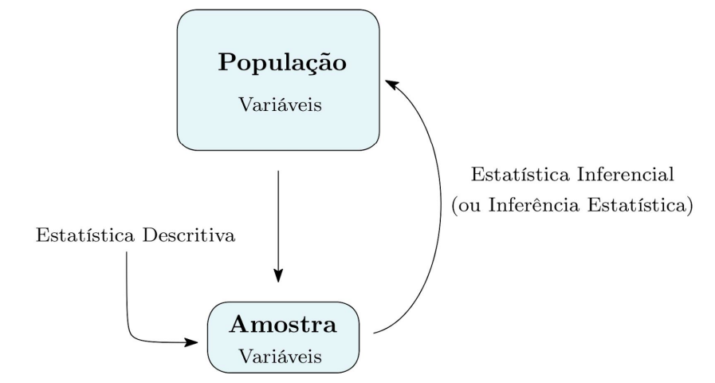
- População: É o conjunto de indivíduos, itens ou observações, portadores de pelo menos uma característica em comum.
- Amostra: É qualquer subconjunto finito de uma população.
- Variável: São as características de interesse de uma população.
As variáveis se classificam por:

5.1 Análises Descritivas
5.1.1 Tabelas de Frequência
Tabelas de Frequência Sem Classes
Utilizadas em geral para representar variáveis qualitativas ou numéricas discretas transformadas em fator.
## Dados de filmes:
filmes <- tibble::tibble(
titulo = c("A", "B", "C", "D", "E", "F", "G", "H", "I", "J"),
ano = c(2020, 2021, 2020, 2021, 2021, 2022, 2022, 2020, 2022, 2021),
genero = c("Ação", "Comédia", "Ação", "Comédia", "Drama", "Ação",
"Drama", "Ação", "Comédia", "Drama"),
receita = c(100, 200, 150, 180, 90, 300, 120, 80, 220, 70),
orcamento = c(50, 100, 60, 90, 40, 80, 50, 30, 100, 35),
nota = c(7.5, 8.2, 7.0, 6.8, 7.9, 7.5, 7.2, 6.5, 8.0, 7.4)
)##
## Ação Comédia Drama
## 4 3 3##
## Ação Comédia Drama
## 0.4 0.3 0.3Tabelas de Frequência Com Classes
Utilizadas para representar variáveis contínuas.
# Definir as classes (intervalos) de notas
breaks <- seq(6, 8.5, by = 0.5)
# Quebrando os dados nas classes
filmes$nota_classes <- cut(filmes$nota, breaks = breaks,
include.lowest = FALSE, right = TRUE)
# include.lowest = FALSE e right = TRUE (default)
# para não incluir o limite inferior e incluir o limite superior.
# Tabela de frequências absolutas com classes
freq_abs_classe <- filmes %>% count(nota_classes)
# Tabela de frequências relativas com classes
freq_rel_classes <- freq_abs_classe %>% mutate(freq_relativa = n/sum(n))Podemos também calcular as frequências acumuladas:
## Calcular frequências acumuladas (absolutas e relativas)
freq_acumulada_classes <- freq_rel_classes %>%
mutate(freq_abs_acum = cumsum(n), # Frequência absoluta acumulada
freq_rel_acum = cumsum(freq_relativa)) # Frequência relativa acumulada
# nomes em cumsum referentes aos nomes da tabela freq_rel_classes
# Resultado:
freq_acumulada_classes## # A tibble: 5 × 5
## nota_classes n freq_relativa freq_abs_acum freq_rel_acum
## <fct> <int> <dbl> <int> <dbl>
## 1 (6,6.5] 1 0.1 1 0.1
## 2 (6.5,7] 2 0.2 3 0.3
## 3 (7,7.5] 4 0.4 7 0.7
## 4 (7.5,8] 2 0.2 9 0.9
## 5 (8,8.5] 1 0.1 10 15.1.2 Medidas Descritivas
Nos conceitos básicos a seguir, vamos considerar \(x_1, x_2, \dots, x_n\), um conjunto de valores.
Medidas de posição
Principais Medidas de Posição:
| Medida | Descrição | Fórmula / Observações |
|---|---|---|
| Média | Valor médio dos dados | \[ \bar{x} = \frac{1}{n} \sum_{i=1}^{n} x_i \] |
| Mediana | Valor central de um conjunto ordenado | Se \(n\) ímpar: \(\tilde{x} = x_{(\frac{n+1}{2})}\) Se \(n\) par: \(\tilde{x} = \frac{x_{(n/2)} + x_{(n/2 + 1)}}{2}\) |
| Moda | Valor mais frequente | A moda é o valor que ocorre com maior frequência. |
| Quantis | Dividem os dados em partes iguais | Quartis (4), Decis (10), Percentis (100). |
| Mínimo/Máximo | Valores extremos do conjunto | Mínimo: \(\min(x)\), Máximo: \(\max(x)\) |
Medidas de posição usando funções básicas do R:
## [1] 7.4## [1] 7.45## Moda - não tem função básica no R
moda <- function(x) {
tb <- table(x)
as.numeric(names(tb)[tb == max(tb)])
}
moda(filmes$nota)## [1] 7.5## [1] 6.5## [1] 8.2## 0% 25% 50% 75% 100%
## 6.50 7.05 7.45 7.80 8.20 # Percentis - 100 partes iguais
# Ex: 10º e 90º percentis
quantile(filmes$nota, probs = c(0.10, 0.90))## 10% 90%
## 6.77 8.02## Min. 1st Qu. Median Mean 3rd Qu. Max.
## 6.50 7.05 7.45 7.40 7.80 8.20Para calcular medidas de alguma variável por categorias de outra, podemos usar a função aggregate.
## Sintaxe:
aggregate(formula, data, FUN)
- formula: do tipo variável ~ agrupador
- data: o nome do dataframe
- FUN: a função que será aplicada## genero nota
## 1 Ação 7.125000
## 2 Comédia 7.666667
## 3 Drama 7.500000## Média da nota e da receita por gênero
aggregate(cbind(nota, receita) ~ genero, data = filmes, FUN = mean)## genero nota receita
## 1 Ação 7.125000 157.50000
## 2 Comédia 7.666667 200.00000
## 3 Drama 7.500000 93.33333## ano genero nota
## 1 2020 Ação 7.00
## 2 2022 Ação 7.50
## 3 2021 Comédia 7.50
## 4 2022 Comédia 8.00
## 5 2021 Drama 7.65
## 6 2022 Drama 7.20## Outras funções em FUN
aggregate(nota ~ ano + genero, data = filmes,
FUN = function(x) c(media = mean(x), n = length(x)))## ano genero nota.media nota.n
## 1 2020 Ação 7.00 3.00
## 2 2022 Ação 7.50 1.00
## 3 2021 Comédia 7.50 2.00
## 4 2022 Comédia 8.00 1.00
## 5 2021 Drama 7.65 2.00
## 6 2022 Drama 7.20 1.00Medidas de posição usando o pacote dplyr:
## Medidas de Posição das notas
filmes %>%
summarise(
media_nota = mean(nota),
mediana_nota = median(nota),
moda_nota = moda(nota),
min_nota = min(nota),
max_nota = max(nota)
)## # A tibble: 1 × 5
## media_nota mediana_nota moda_nota min_nota max_nota
## <dbl> <dbl> <dbl> <dbl> <dbl>
## 1 7.4 7.45 7.5 6.5 8.2## Medidas de Posição das notas por categoria de genero
filmes %>%
group_by(genero) %>%
summarise(
media_nota = mean(nota),
mediana_nota = median(nota),
min_nota = min(nota),
max_nota = max(nota),
n = n(), .groups = "drop")## # A tibble: 3 × 6
## genero media_nota mediana_nota min_nota max_nota n
## <chr> <dbl> <dbl> <dbl> <dbl> <int>
## 1 Ação 7.12 7.25 6.5 7.5 4
## 2 Comédia 7.67 8 6.8 8.2 3
## 3 Drama 7.5 7.4 7.2 7.9 3# .groups = "drop": Desfaz o agrupamento após o resumo.
# Ou seja, você retorna a tabela sem a variável de Groups.
## Medidas de Posição das notas por categoria de ano e genero
filmes %>%
group_by(ano, genero) %>%
summarise(
media_nota = mean(nota),
mediana_nota = median(nota),
min_nota = min(nota),
max_nota = max(nota),
n = n(), .groups = "drop")## # A tibble: 6 × 7
## ano genero media_nota mediana_nota min_nota max_nota n
## <dbl> <chr> <dbl> <dbl> <dbl> <dbl> <int>
## 1 2020 Ação 7 7 6.5 7.5 3
## 2 2021 Comédia 7.5 7.5 6.8 8.2 2
## 3 2021 Drama 7.65 7.65 7.4 7.9 2
## 4 2022 Ação 7.5 7.5 7.5 7.5 1
## 5 2022 Comédia 8 8 8 8 1
## 6 2022 Drama 7.2 7.2 7.2 7.2 1Medidas de Dispersão
Principais Medidas de Dispersão:
| Medida | Descrição | Fórmula / Observações |
|---|---|---|
| Amplitude Total | Diferença entre o maior e o menor valor | \[ A = \max(x) - \min(x) \] |
| Variância | Média dos quadrados dos desvios em relação à média | \[ s^2 = \frac{1}{n - 1} \sum_{i=1}^{n} (x_i - \bar{x})^2 \] |
| Desvio-Padrão | Raiz quadrada da variância | \[ s = \sqrt{s^2} \] |
| Coeficiente de Variação (CV) | Dispersão relativa em relação à média, expressa em porcentagem | \[ CV = \frac{s}{\bar{x}} \times 100\% \] |
Medidas de dispersão usando funções básicas do R:
## [1] 1.7## [1] 0.2933333## [1] 0.5416026## Coeficiente de Variação (CV)
cv <- function(x) sd(x)/mean(x) * 100
cv(filmes$nota) # Coeficiente de variação (%)## [1] 7.318954Medidas de dispersão usando o pacote dplyr:
## Medidas de Posição das notas
filmes %>%
summarise(
at_nota = diff(range(filmes$nota)),
var_nota = var(filmes$nota),
sd_nota = sd(nota),
cv_nota = cv(nota)
)## # A tibble: 1 × 4
## at_nota var_nota sd_nota cv_nota
## <dbl> <dbl> <dbl> <dbl>
## 1 1.7 0.293 0.542 7.325.1.3 Gráficos
Gráficos para Variáveis Qualitativas
1. Gráfico de Barras
O gráfico de barras pode ser usado para representar a frequência absoluta de variáveis qualitativas (nominais ou ordinais).
# Contando as frequências dos generos
freq_genero <- table(filmes$genero)
barplot(freq_genero,
main = "Frequência dos generos dos filmes",
xlab = "genero", ylab = "frequencias",
col = "lightblue")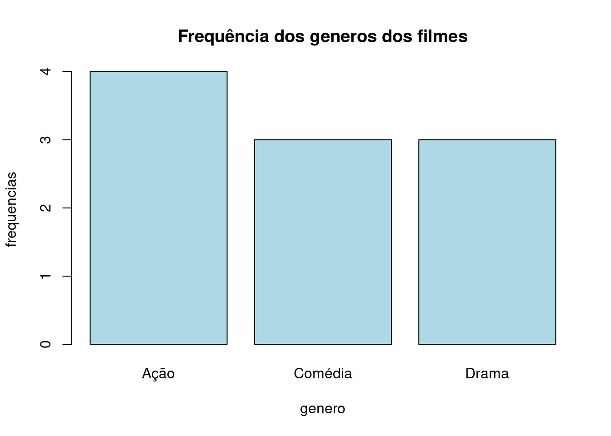
2. Gráfico de Setores
Este gráfico é ideal para representar a distribuição percentual de categorias de uma variável qualitativa. Ele é especialmente útil para mostrar a proporção de cada categoria em relação ao todo.
pie(freq_genero,
main = "Distribuição dos generos dos filmes",
col = rainbow(length(freq_genero)),
labels = paste(names(freq_genero), "\n",
round(100*freq_genero/sum(freq_genero), 1), "%"))
3. Gráfico de Barras Empilhadas
Se você quiser empilhar barras para visualizar a distribuição de uma variável qualitativa em função de outra.
barplot(table(filmes$genero, filmes$ano), beside = FALSE,
col = rainbow(3),
legend = names(freq_genero),
main = "Distribuição do genero por ano",
xlab = "genero", ylab = "ano")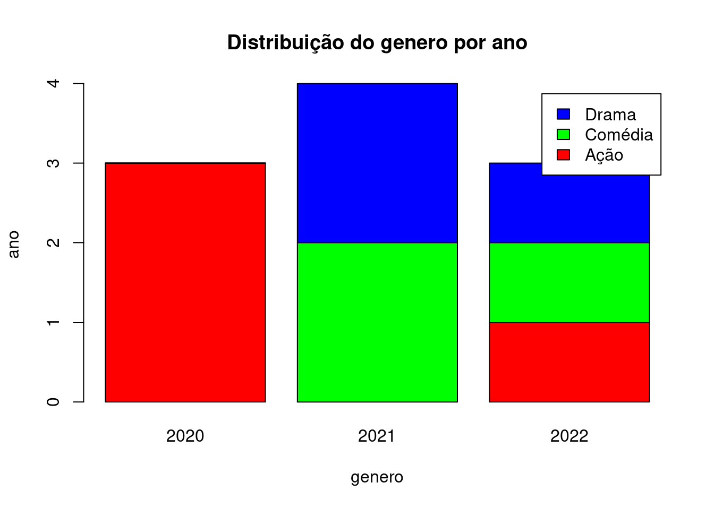
Gráficos para Variáveis Quantitativas
1. Gráfico de Dispersão
É utilizado para verificar a relação entre duas variáveis quantitativas.
plot(filmes$orcamento, filmes$receita,
main = "Gráfico de Dispersão para o orçamento",
xlab = "Orçamento", ylab = "Receita",
col = "blue", pch = 19) # pch = 19 faz os pontos aparecerem como círculos sólidos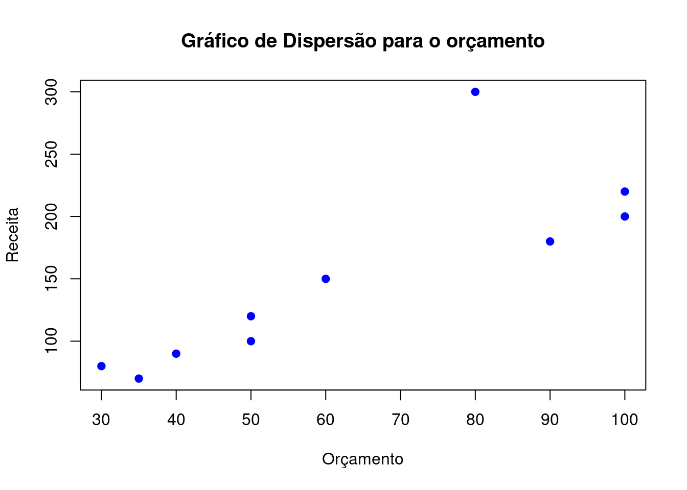
2. Histograma
O histograma é útil para visualizar a distribuição de variáveis quantitativas contínuas.
# usando breaks, criado anteriormente:
breaks <- seq(6, 8.5, by = 0.5)
hist(filmes$nota,
col = "orange",
main = "Histograma das notas",
xlab = "Classes de notas", ylab = "Frequência",
breaks = breaks) # O argumento breaks define o número de intervalos
3. Boxplot
O boxplot é útil para visualizar a distribuição de uma variável quantitativa e identificar outliers.
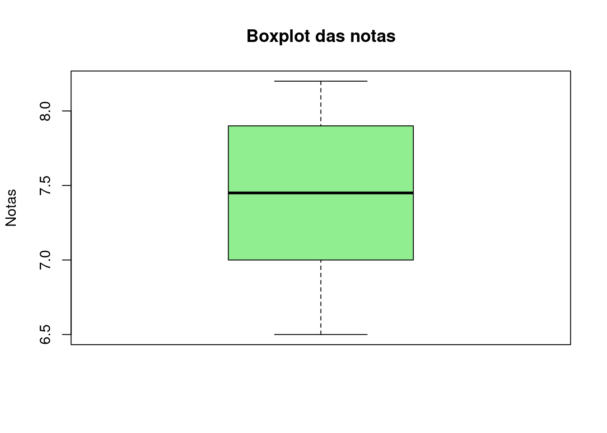
O boxplot também pode ser usado para ver o comportamento de uma variável quantitativa por categorias de outra variável.
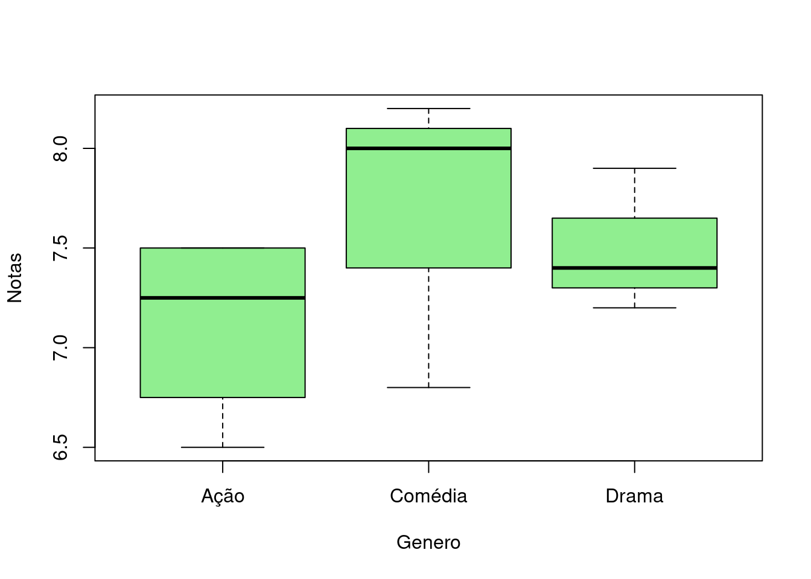
Adicionando as informações das médias também no gráfico:
boxplot(nota ~ genero, data = filmes,
xlab = "Genero",
ylab = "Notas",
col = "lightgreen")
# Calculando as médias por genero
medias <- tapply(filmes$nota, filmes$genero, mean, na.rm = TRUE)
# Adicionando as médias no gráfico
points(x = 1:length(medias), y = medias,
col = "black", pch = 19, cex = 1) 
Exercícios
1. Considere a variável a seguir representando o número de filhos de 30 famílias:
filhos <- c(0, 1, 2, 2, 3, 1, 0, 2, 1, 3, 2, 2, 0, 1, 2, 3, 2, 4, 1, 2, 1, 0,
2, 2, 3, 1, 2, 0, 1, 2)- Usando o pacote
dplyr, construa uma tabela com as frequências absolutas, relativas e acumuladas. - Calcule, com
dplyr, as medidas de posição e dispersão: média, mediana, moda, mínimo, máximo, quartis, amplitude total, variância, desvio padrão e coeficiente de variação. - Construa um gráfico de dispersão que mostre a frequência absoluta de cada valor distinto de filhos.
- Personalize o gráfico: altere o título, os nomes dos eixos e a cor dos pontos.
2. Considere o vetor a seguir com salários mensais (em mil R$) de um grupo de pessoas:
salarios <- c(2.5, 3.2, 2.8, 4.1, 5.5, 6.0, 7.3, 3.0, 2.7, 6.5, 5.9, 2.6,
3.4, 4.0, 6.2, 4.5, 3.6, 5.0)- Agrupe os salários em intervalos de classe iniciando em 2, com amplitude 1 (aberto à esquerda e fechado à direita) usando
cut()e construa uma tabela com as frequências absolutas, relativas e acumuladas comdplyr. - Calcule as medidas de posição e dispersão dos salários usando
dplyr. - Construa um histograma dos salários.
- Personalize o histograma: modifique as cores, o título e os nomes dos eixos.
3. Utilize o conjunto de dados mtcars, já disponível no R:
- Para a variável
mpg(milhas por galão), construa uma tabela com as frequências absolutas, relativas e acumuladas agrupando os dados em intervalor de classe de amplitude 5. - Calcule as medidas de posição e dispersão da variável
mpg. - Construa um boxplot de
mpgpor número de cilindros (cyl). - Personalize o gráfico: modifique cores, título, nomes dos eixos e adicione bordas aos boxplots.
4. Considere os dados agrupados para a variável X: Nº de atendimentos diários:
| X | Frequência |
|---|---|
| 10 | 2 |
| 12 | 5 |
| 14 | 7 |
| 16 | 9 |
| 18 | 4 |
| 20 | 3 |
Com base nessa tabela:
- Calcule as seguintes medidas: média, mediana, mínimo e máximo, amplitude total, desvio padrão e coeficiente de variação (CV).
- Construa o gráfico de dispersão da frequência de atendimentos.
- Personalize o gráfico anterior com título, nomes nos eixos e cor dos pontos.
5.2 Probabilidade
5.2.1 Principais Modelos Discretos
1. Distribuição Binomial
Notação: \(X \sim B(n,p)\)
Função de Probabilidade: \[ P(X = k) = \binom{n}{k} p^k (1 - p)^{n - k}, \quad \text{para} \quad k = 0, 1, \dots, n \] Média e Variância: \(E(X)=np\) e \(Var(X)=np(1-p)\)
Parâmetros no R: size = n (número de tentativas), prob = p (probabilidade de sucesso em cada tentativa)
Funções no R:
## Probabilidades
# P(X = k): Probabilidade do valor X=k
dbinom(k, size, prob)
# P(X ≤ k): Probabilidade acumulada até o valor X=k
pbinom(k, size, prob, lower.tail = TRUE) # equialente a sum(dbinom(0:k, size, prob))
# P(X > k): Probabilidade maior do que o valor X=k
1 - pbinom(k, size, prob)
## Geração de números aleatórios
rbinom(n, size, prob)Exemplos:
## [1] 0.2048## [1] 0.73728## [1] 0.73728## [1] 0.26272## [1] 0.26272Gráfico:
x <- 0:20
plot(x, dbinom(x, size=20, prob=0.5), type="h", lwd=2,
main="Distribuição Binomial (n=20, p=0.5)",
xlab="Número de sucessos", ylab="Probabilidade")
2. Distribuição Poisson
Notação: \(X \sim Poisson(\lambda)\)
Função de Probabilidade: \[ P(X = k) = \frac{e^{-\lambda}\lambda^x}{x!}, \quad \text{para} \quad x \ge 0 \]
Média e Variância: \(E(X)=\lambda\) e \(Var(X)=\lambda\)
Parâmetros no R: lambda = \(\lambda\)
Funções no R:
## Probabilidades
# P(X = k): Probabilidade do valor X=k
dpois(k, lambda, log = FALSE)
# P(X ≤ k): Probabilidade acumulada até o valor X=k
ppois(k, lambda, lower.tail = TRUE) # equialente a sum(dpois(0:k, lambda))
# P(X > k): Probabilidade maior do que o valor X=k
1 - ppois(k, lambda)
## Geração de números aleatórios
rpois(n, lambda)Exemplos:
## [1] 0.1493612# 2. P(X > 1) = 1 - P(X ≤ 1) = 1 - [P(X=0) + P(X=1)]
1 - (dpois(0, lambda = 3) + dpois(1, lambda = 3))## [1] 0.8008517## [1] 0.8008517Gráfico:
x <- 0:10
plot(x, dpois(x, lambda = 3), type="h", lwd=2,
main="Distribuição Poisson (lambda = 3)",
xlab="Valores de X", ylab="Probabilidade")
5.2.2 Principais Modelos Contínuos
1. Distribuição Uniforme Contínua
Notação: \(X \sim U_c(a,b)\)
Função de Densidade de Probabilidade: \[ f(x)=\frac{1}{b-a}, \quad \text{para} \quad x\in [a,b] \]
Média e Variância: \(E(X)=\frac{(a+b)}{2}\) e \(Var(X)=\frac{(b-a)^2}{12}\)
Parâmetros no R: min = \(a\) e max = \(b\)
Funções no R:
## Probabilidades
# f(x): Valor da função densidade em x
dunif(x, min, max, log = FALSE)
# P(X ≤ x): Probabilidade acumulada até o valor x
punif(x, min, max, lower.tail = TRUE)
# P(X > k): Probabilidade maior do que o valor x
1 - punif(x, min, max)
## Geração de números aleatórios
runif(n, min, max)
## Quantis
qunif(p, min, max, lower.tail = TRUE)Exemplos:
## [1] 0.25## [1] 0.5## [1] 3.391909 2.218477 2.538593 3.969590 4.395748 1.948953 3.359917 2.274944
## [9] 1.917143 4.566176## [1] 2Gráfico:

2. Distribuição Normal
Notação: \(X \sim N(\mu, \sigma^2)\)
Função de Densidade de Probabilidade: \[ f(x) = \frac{1}{\sqrt{2\pi\sigma^2}} e^{-\frac{1}{2}\left(\frac{x - \mu}{\sigma} \right)^2} \]
Média e Variância: \(E(X)=\mu\) e \(Var(X)=\sigma^2\), desvio-padrão: \(\sigma = \sqrt{\sigma^2}\)
Parâmetros no R: mean = \(\mu\) (média), sd = \(\sigma\) (desvio-padrão)
Funções no R:
## Probabilidades
# f(x): Valor da função densidade em x
dnorm(x, mean, sd, log = FALSE)
# P(X ≤ x): Probabilidade acumulada até o valor x
pnorm(x, mean, sd, lower.tail = TRUE)
# P(X > k): Probabilidade maior do que o valor x
1 - pnorm(x, mean, sd) # equivalente a
pnorm(x, mean, sd, lower.tail = FALSE)
## Geração de números aleatórios
rnorm(n, mean, sd)
## Quantis
qnorm(p, mean = 0, sd = 1, lower.tail = TRUE)Exemplos:
## [1] 0.1586553## [1] 0.5## [1] 9.952253 6.751808 7.109670 10.124945 11.874016 11.802563 10.324212
## [8] 12.922326 9.831610 10.646412## [1] 8.65102Um caso particular da distribuição Normal é quando \(\mu=0\) e \(\sigma = 1\). Neste caso, dizemos que \(Z \sim N(0,1)\) e a chamamos de distribuição Normal Padrão.
Gráfico:
curve(dnorm(x, mean = 10, sd = 2), from = -5, to = 15,
col = "blue", lwd = 2, ylim = c(0,0.5), ylab = "Distribuições Normais")
curve(dnorm(x), from = -5, to = 5, add = TRUE, lwd = 2,
col = "red")
legend("topright", legend = c("Normal padrão: N(0,1)", "N(10,4)"),
col = c("red", "blue"), lty = c(1, 1), lwd = 2)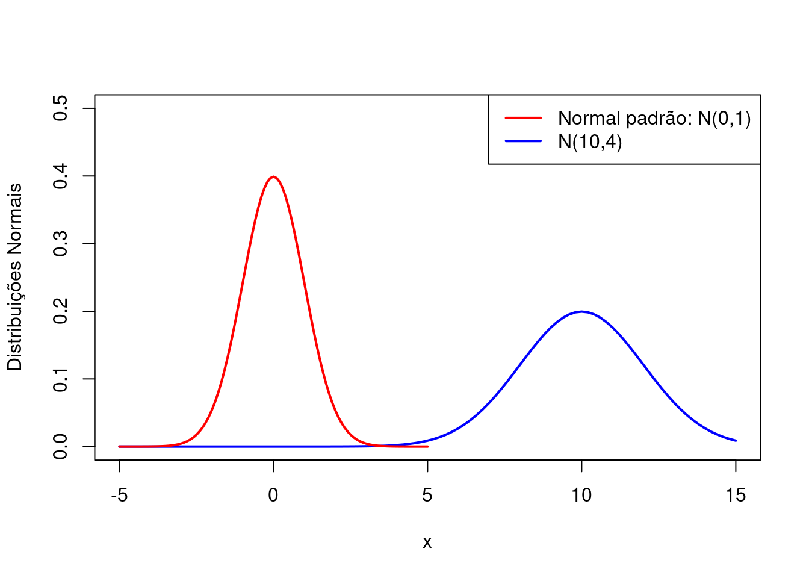
Podemos transformar uma variável \(X \sim N(\mu, \sigma^2)\) em uma Normal Padrão, fazendo: \[ Z = \frac{X-\mu}{\sigma} \sim N(0,1) \]
3. Distribuição t-Student
Notação: \(X \sim t_v\)
Média e Variância: \(E(X)=0\) e \(Var(X)=\frac{v}{v-2}\), se \(v > 2\).
Parâmetros no R: df = \(v\) (graus de liberdade)
Funções no R:
## Probabilidades
# f(x): Valor da função densidade em x
dt(x, df, log = FALSE)
# P(X ≤ x): Probabilidade acumulada até o valor x
pt(x, df, lower.tail = TRUE)
# P(X > k): Probabilidade maior do que o valor x
1 - pt(x, df)
## Geração de números aleatórios
rt(n, df)
## Quantis
qt(p, df, lower.tail = TRUE)Exemplos:
## [1] 0.9948383## [1] 0.003199768## [1] -1.26390850 0.67346318 -0.47999264 -0.32674250 0.37638425 0.17740310
## [7] 0.02049149 1.52012916 2.01968941 0.65584442## [1] -0.7266868Obs.: Quando df aumenta, a distribuição t-student se aproxima da distribuição N(0,1).
Gráfico:
curve(dt(x, df = 3), from = -5, to = 5,
col = "blue", lwd = 2, ylim = c(0,0.4),
ylab = "Densidade", xlab = "t")
curve(dt(x, df = 7), from = -5, to = 5,
col = "purple", lwd = 2, add = TRUE)
curve(dt(x, df = 30), from = -5, to = 5,
col = "green", lwd = 2, add = TRUE)
curve(dnorm(x), from = -5, to = 5, col = "red", lwd = 2, add = TRUE)
legend("topright", legend = c("t (df = 3)", "t (df = 7)",
"t (df = 30)", "N(0,1)"),
col = c("blue", "purple", "green", "red"), lwd = 2)
Tabela de Referência Rápida
| Distribuição | Probabilidades | Quantil | Números Aleatórios |
|---|---|---|---|
| Binomial | dbinom() ou pbinom() | qbinom() | rbinom() |
| Poisson | dpois() ou ppois() | qpois() | rpois() |
| Uniforme | punif() | qunif() | runif() |
| Normal | pnorm() | qnorm() | rnorm() |
| t-Student | pt() | qt() | rt() |
Exercícios
1. Numa distribuição \(B(n=15, p=0,4)\), calcule:
- P(X = 7)
- P(X ≤ 5)
- P(X > 10)
2. Para \(X \sim N(100, 10)\), calcule:
- P(X ≤ 110)
- P(90 < X ≤ 105)
- O valor x, tal que P(X ≤ x) = 0,95
3. Gere 20 valores das seguintes distribuições:
- \(B(n=20, p=0,25)\)
- \(N(\mu=50, \sigma^2=25)\)
- \(U_c(0,1)\)
- \(t_{(7)}\)
4. Para as distribuições a seguir, encontre os quartis (Q1 e Q3):
- \(N(\mu=10, \sigma^2=25)\)
- \(U_c(2,10)\)
- \(t_{(20)}\)
5.3 Análises Inferenciais
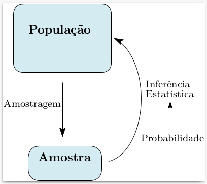

Para a distribuição Normal:
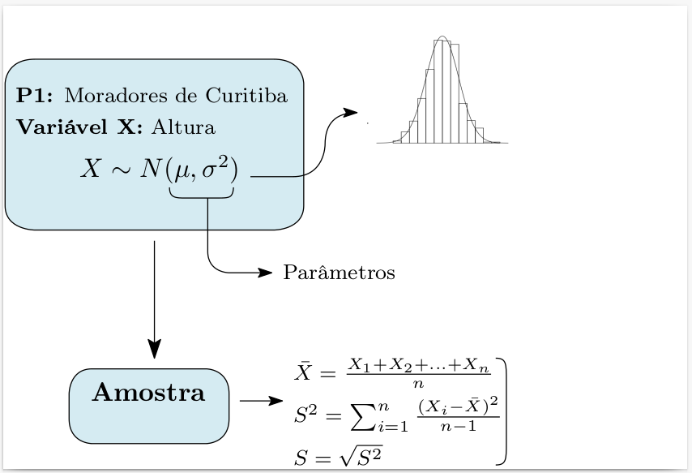
5.3.1 Intervalo de Confiança
De modo geral, seja \(\theta\) o parâmetro de interesse, então o intervalo de confiança para \(\theta\) com probabilidade \(1 − \alpha\) (nível de confiança) é: \[ IC(θ,(1 − α)) = [Li; Ls] \] onde:
- \(P(Li ≤ θ ≤ Ls) = 1 − α\)
- Li → limite inferior do intervalo;
- Ls → limite superior do intervalo;
Intervalo de Confiança: média \(µ\) de uma população Normal
\[ IC(µ,(1 − α)) = [\bar{X} − e; \bar{X} + e] \]
Se \(σ^2\) conhecida:
- \(e = z\frac{s}{\sqrt{n}}\)
- \(z\) é tal que \(P(Z ≥ z) = \frac{\alpha}{2}\). no R:
qnorm(1-α/2)
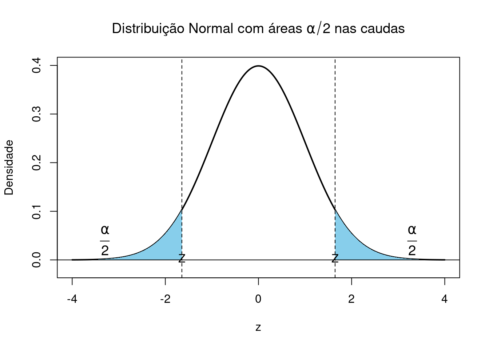
Se \(σ^2\) desconhecida:
- \(e = t_{(n-1)}\frac{s}{\sqrt{n}}\)
- \(t\) é tal que \(P(t ≥ t_{(n-1)}) = \frac{\alpha}{2}\). no R:
qt(1-α/2, df = n-1)
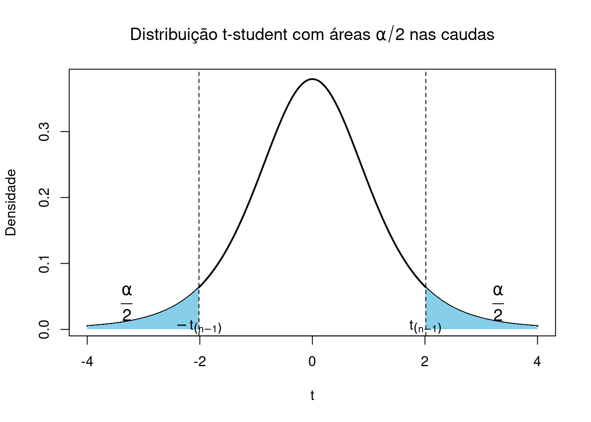
Exemplo:
Uma amostra de 8 clientes de um banco apresentou os seguintes tempos (em minutos) para completar um atendimento: 12, 15, 14, 13, 16, 14, 15, 13 Assumindo que o tempo de atendimento tem distribuição normal, construa um intervalo de confiança de 95% para a média populacional.
## Dados
x <- c(12, 15, 14, 13, 16, 14, 15, 13)
## Nivel de confiança
# 1-alpha = 0.95
alpha = 1-0.95
## Informações da Amostra
n <- length(x) # Tamanho da amostra
media <- mean(x) # Média amostral
desvio <- sd(x) # Desvio padrão amostral
erro <- desvio / sqrt(n) # Erro padrão da média
## Valor crítico da t com n - 1 graus de liberdade
t_critico <- qt(1-alpha/2, df = n - 1)
## Limites do intervalo de confiança
limite_inferior <- media - t_critico * erro
limite_superior <- media + t_critico * erro
cbind(limite_inferior, limite_superior)## limite_inferior limite_superior
## [1,] 12.90539 15.09461Usando o pacote DescTools:
# Instalar se ainda não tiver
# install.packages("DescTools")
# Carregar
library(DescTools)
x <- c(12, 15, 14, 13, 16, 14, 15, 13)
# Intervalo de confiança de 95%
MeanCI(x, conf.level = 0.95)## mean lwr.ci upr.ci
## 14.00000 12.90539 15.094615.3.2 Testes de Hipóteses
Etapas básicas num teste de hipóteses:
- Formulação das hipóteses
- Cálculo da Estatística Teste
- Região Crítica ou p-valor
- Conclusão
Seja \(\mu\) a altura média de uma população (parâmetro) sobre o qual queremos verificar uma afirmação (testar uma hipótese). Queremos verificar se \(\mu\) é igual a uma quantidade fixada, por exemplo, se \(\mu\) é igual a 180. Então, formulamos as hipóteses:
- Hipótese nula (H0): é a hipótese que estamos colocando à prova.
- Hipótese alternativa (H1): é a hipótese que será considerada aceitável, caso a hipótese nula seja rejeitada.
Neste caso,
- H₀: µ = 180
- H₁: µ ≠ 180
Qualquer que seja a decisão tomada, estamos sujeitos a cometer erros:
- Erro de tipo I: Rejeitar a hipótese nula quando essa é verdadeira. \[ α = P(\text{Erro Tipo I}) = P(\text{Rejeitar } H_0|H_0 \text{ é verdadeira}) \]
- Erro de tipo II: Não rejeitar a hipótese nula quando essa é falsa. \[ β = P(\text{Erro Tipo II}) = P(\text{Não rejeitar } H_0|H_0 \text{ é falsa}) \]
A probabilidade α é também chamada de nível de significância e é geralmente fixada em 10%, 5% ou 1%.
Tipos de Hipóteses para µ:
Comparando µ com algum valor hipotético µ₀:
| Hipótese | Bilateral | Unilateral esquerda | Unilateral direita |
|---|---|---|---|
| H₀ | µ = µ₀ | µ ≥ µ₀ | µ ≤ µ₀ |
| H₁ | µ ≠ µ₀ | µ < µ₀ | µ > µ₀ |
Teste de Hipótese para µ (com σ² desconhecida)
Estatística Teste: \[ T_0 = \frac{\bar{X}-\mu_0}{S/\sqrt{n}} \]
Usando a Região Crítica:

Usando o p-valor:
O p-valor é a probabilidade de obter um resultado tão extremo (ou mais extremo) quanto o observado nos dados, assumindo que a hipótese nula (H₀) é verdadeira. Em outras palavras, mede quão compatíveis os dados estão com H₀.
- Teste unilateral à direita: p-valor = \(P(T > T_0)\).
- Teste unilateral à esquerda: p-valor = \(P(T < T_0)\).
- Teste bilateral: p-valor = \(2P(T > |T_0|)\).
Conclusão: Se \(T_0 \in RC\) ou \(p-valor \le \alpha\), rejeitamos a hipótese nula. Ou seja, existem evidências amostrais de que a média é diferente de \(\mu_0\) (ou maior/menor, dependendo do teste).
Exemplo: Tempo de Resposta de um Servidor
Um provedor afirma que seu servidor responde, em média, em até 200 ms. Um analista de desempenho quer verificar se o tempo de resposta médio real é maior que isso. Ele coleta uma amostra de 12 requisições, obtendo os tempos de resposta em milissegundos:
Hipóteses:
- H₀: μ ≤ 200 ms (o tempo de resposta está dentro do prometido)
- H₁: μ > 200 ms (o tempo de resposta é maior que o prometido)
No R:
### Teste t unilateral à direita
# Considerando alpha = 5%
tempos <- c(210, 198, 203, 215, 220, 205, 199, 211, 208, 202, 219, 217)
## Estatística Teste
n <- length(tempos)
t0 <- (mean(tempos) - 200)/(sd(tempos)/sqrt(n))
## Região crítica
alpha = 0.05
ts=qt(1-alpha, df = n-1)
t0 > ts # rejeita H0## [1] TRUE## p-valor
p_valor <- pt(t0, df = n-1, lower.tail = F)
## No R:
t.test(tempos, mu = 200, alternative = "greater",
conf.level = 1-alpha)##
## One Sample t-test
##
## data: tempos
## t = 4.0216, df = 11, p-value = 0.001005
## alternative hypothesis: true mean is greater than 200
## 95 percent confidence interval:
## 204.9348 Inf
## sample estimates:
## mean of x
## 208.9167Conclusão: Como p-valor < 5%, rejeitamos H₀. Existem evidências amostrais de que o tempo de resposta médio do servidor é maior que 200 ms.
Exemplo: Tempo Médio Diário em Redes Sociais entre Universitários
Pesquisas indicam que jovens universitários passam, em média, 3 horas por dia em redes sociais. Um pesquisador suspeita que esse valor mudou recentemente, devido ao aumento de conteúdo acadêmico e profissional nas plataformas.
Ele coleta dados de 10 estudantes de uma universidade local:
Hipóteses:
- H₀: μ = 3.0 horas
- H₁: μ ≠ 3.0 horas (teste bilateral, para verificar se houve mudança)
### Teste t bilateral
# Considerando alpha = 5%
tempos <- c(3.5, 3.8, 2.9, 3.3, 4.0, 2.7, 3.2, 3.6, 2.8, 3.1)
## Estatística Teste
n <- length(tempos)
t0 <- (mean(tempos) - 3)/(sd(tempos)/sqrt(n))
## Região crítica
alpha <- 0.05
ti <- qt(alpha/2, df = n-1)
ts <- -ti
t0 < ti || t0 > ts # Não rejeita H0## [1] FALSE## p-valor
p_valor <- 2*pt(abs(t0), df = n-1, lower.tail = F)
## No R:
t.test(tempos, mu = 3, alternative = "two.sided",
conf.level = 1-alpha)##
## One Sample t-test
##
## data: tempos
## t = 2.1169, df = 9, p-value = 0.06335
## alternative hypothesis: true mean is not equal to 3
## 95 percent confidence interval:
## 2.980104 3.599896
## sample estimates:
## mean of x
## 3.29Conclusão: Como p-valor > 5%, não rejeitamos H₀. Existem evidências amostrais de que o tempo médio diário gasto em redes sociais pelos estudantes é de 3h.
Exercícios
1. Um estudo afirma que o escore médio de ansiedade de jovens universitários (medido por um questionário validado) é 40 pontos. Um psicólogo deseja verificar se, em sua universidade, os estudantes apresentam um nível diferente de ansiedade.
a. Calcule o intervalo de confiança de 95% para a média do escore de ansiedade.
b. Teste as hipóteses (Use α = 0,05):
- H₀: μ = 40
- H₁: μ ≠ 40
2. Estudos indicam que jovens usam o celular por cerca de 5 horas diárias. Um pesquisador quer saber se esse valor aumentou com a popularização dos vídeos curtos.
a. Calcule o intervalo de confiança de 95% para o tempo médio diário de uso.
b. Teste as hipóteses (Use α = 0,05):
- H₀: μ ≤ 5
- H₁: μ > 5
3. Em uma escala de 0 a 10, a média nacional de satisfação com o ensino remoto foi 6. Um professor quer saber se seus alunos estão mais satisfeitos que a média nacional.
a. Estime o IC de 90% para a média de satisfação dos alunos.
b. Teste as hipóteses (Use α = 0,10):
- H₀: μ ≤ 6
- H₁: μ > 6
5.4 Exercícios do Capítulo 5 (Entregar na lista 1)
Considerando o conjunto de dados a seguir, apresente as funções no R necessárias para os cálculos dos itens solicitados:
a. Transforme as variáveis Curso e Genero em fatores cujos níveis são ordenados (em ordem decrescente) pela frequência.
b. Construa uma tabela de frequências absoluta, relativa e absoluta acumulada para a variável Curso. Faça o mesmo para a variável Gênero.
c. Construa uma tabela de frequências absoluta, relativa e absoluta acumulada (com classes) para a variável Tempo_Estudo. Considere classes iniciando em 6, com amplitude intervalar 4.
d. Calcule: média, mediana, variância, desvio padrão e coeficiente de variação para as variáveis Tempo_Estudo e Nota_Final.
e. Construa os gráficos a seguir (coloridos e com nomes nos eixos):
- Histograma (com densidades no eixo das ordenadas e amplitude do item (c)) para a variável Tempo_Estudo.
- Boxplot para a variável Tempo_Estudo por Curso.
- Gráficos de barras para as variáveis Curso e Genero.
- Diagrama de dispersão entre as variáveis Tempo_Estudo e Nota_Final.
f. Estime os intervalos de confiança de 95% para as médias de: Tempo_Estudo e Nota_Final.
g. Teste as hipóteses (com conclusão) para o tempo médio de estudo (Use α = 0.05):
- H₀: μ = 12
- H₁: μ ≠ 12
h. Teste as hipóteses (com conclusão) para o nota média final (Use α = 0.05):
- H₀: μ ≤ 6.5
- H₁: μ > 6.5
i. Interprete os principais resultados observados nas analises anteriores.
| ID | Curso | Genero | Tempo_Estudo | Nota_Final |
|---|---|---|---|---|
| 1 | FI | M | 12 | 7.5 |
| 2 | SI | M | 10 | 6.8 |
| 3 | FI | F | 15 | 8.0 |
| 4 | SI | M | 8 | 6.2 |
| 5 | EC | M | 20 | 9.1 |
| 6 | EC | M | 11 | 7.2 |
| 7 | EC | M | 7 | 5.5 |
| 8 | SI | F | 18 | 8.8 |
| 9 | EC | M | 13 | 7.0 |
| 10 | FI | F | 9 | 6.4 |
| 11 | SI | M | 16 | 8.0 |
| 12 | SI | F | 17 | 8.5 |
Legenda:
- SI = Sistemas de Informação
- EC = Engenharia da Computação
- FI = Física